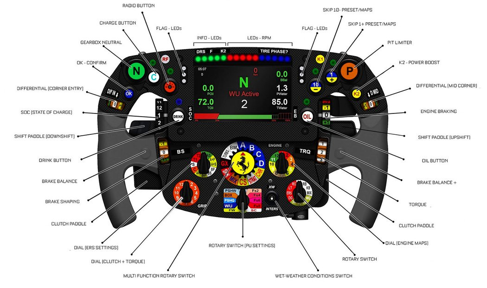
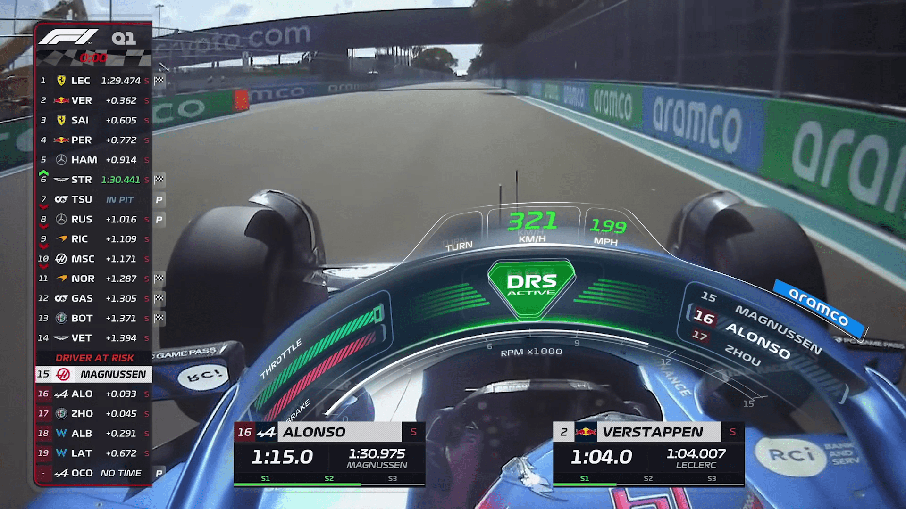
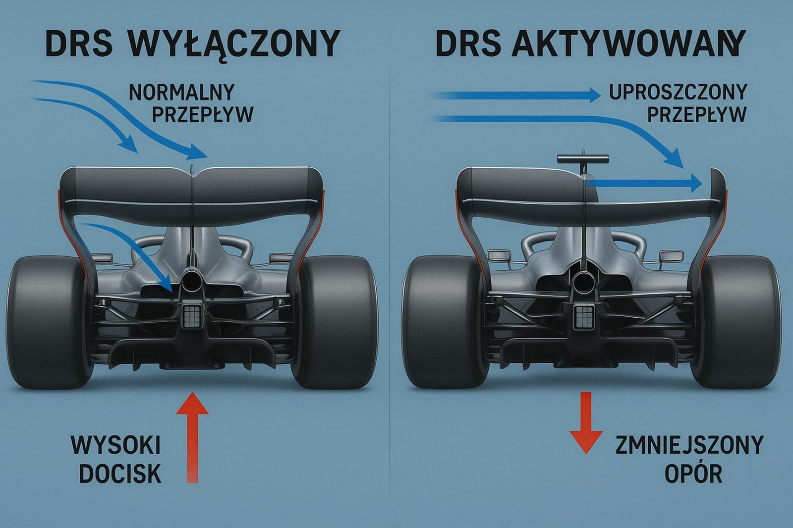
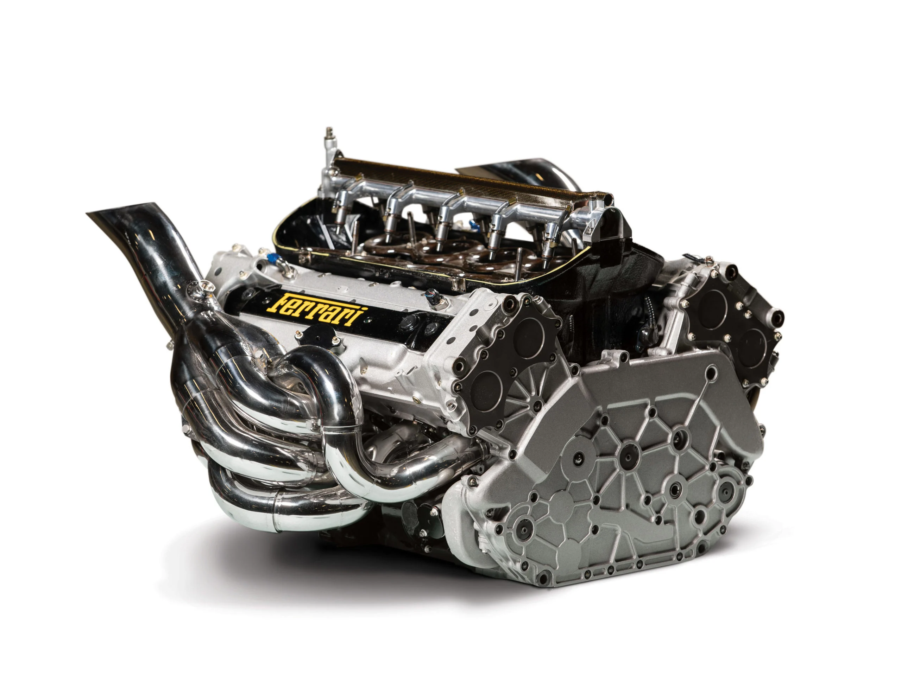

Bolid F1 to zaawansowany, jednomiejscowy pojazd wyścigowy z
hybrydowym silnikiem V6 o pojemności 1,6 litra i mocy ponad 1000 KM, ważący około 800 kg (minimum 798 kg).
- Kierownica
- Kierownica w bolidzie F1 stanowi centrum zarządzania pracą samochodu. Może się na niej znajdować nawet 20 przycisków i „łopatek”.
Z jej poziomu kierowca może zmienić niektóre ustawienia bolidu takie jak balans hamulców, balans dyferencjału,
uruchomić system DRS lub włączyć „Pit Limiter”, który automatycznie redukuje prędkość pojazdu do maksymalnej dozwolonej
w trakcie przejazdu przez aleję serwisową.
Koszt takiej kierownicy może wynosić nawet 35000 €.

- Prędkość
- Prędkość jaką może osiągnąć taki pojazd wynosi ponad 350 km/h (ok. 217 mph) , a do 100 km/h przyspiesza poniżej 2 sekund.
Natomiast od 200 km/h do prawie 0 km/h, zwalnia w ok. 2 sukundy.

- DRS
- System DRS (ang. Drag Reduction System) - to ruchoma część tylnego skrzydła w bolidzie Formuły 1,
która chwilowo zmniejsza opór powietrza, tym samym zwiększając prędkość auta na prostych, aby ułatwić wyprzedzanie.

- Rozrusznik
- Bolidy F1 nie posiadają wewnętrznego rozrusznika, co pozwala na odchudzenie konstrukcji,
a uruchomienie silnika odbywa się za pomocą zewnętrznego urządzenia.

BOLID